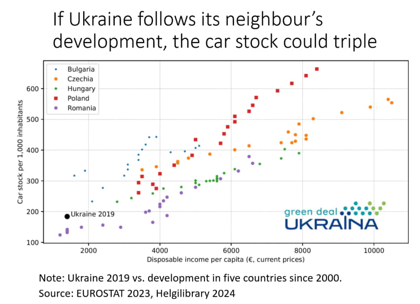

<!--DEV
@ @include('blocks/chart-card/chart-card.html', {
  "addClass": "swiper-slide ",
  "title": 'Нова публікація: Моделі відстеження для рідкого палива'
})
-->

<article class="chart-card @@addClass">
  <h3 class="h4  chart-card__title">
    <a href="#">@@title</a>
  </h3>
  <a href="img/chart-card-img.jpg" class="embed-responsive  embed-responsive--4-3  chart-card__img" data-fancybox="gallery" data-caption="@@title">
    <!-- для ссылки на сайд-баре убрать аттр data-fancybox="gallery" data-caption="@@title" и добавить aria-hidden="true" + tabindex="-1" -->
    <picture>
      <source srcset="img/chart-card-img.webp" media="(min-width: 1280px)" type="image/webp">
      <source srcset="img/chart-card-img.jpg" media="(min-width: 1280px)">
        <!-- 368x245, 575x432 2x -->
      <source srcset="img/chart-card-img.webp" media="(min-width: 1024px)" type="image/webp">
      <source srcset="img/chart-card-img.jpg" media="(min-width: 1024px)">
        <!-- 575x432, 862x646 2x -->
      <source srcset="img/chart-card-img.webp" media="(min-width: 768px)" type="image/webp">
      <source srcset="img/chart-card-img.jpg" media="(min-width: 768px)">
        <!-- 675x506 -->
      <source srcset="img/chart-card-img.webp" media="(min-width: 480px)" type="image/webp">
      <source srcset="img/chart-card-img.jpg" media="(min-width: 480px)">
        <!-- 810x607 -->
      <source srcset="img/chart-card-img.webp" media="(min-width: 360px)" type="image/webp">
      <source srcset="img/chart-card-img.jpg" media="(min-width: 360px)">
        <!-- 575x432 -->
      
    </picture>
  </a>
  <p class="chart-card__descr">Short annotation Short annotation  Short annotation Short annotation Short annotation </p>
</article>
